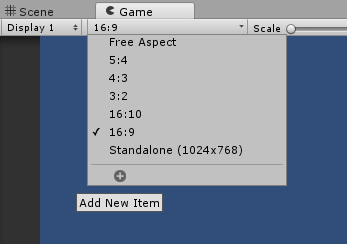

5. Android Deployment
Pendahuluan
Pada praktikum ke-5 ini, kita akan mencoba melanjutkan project flappycopter. Kita juga akan membuat flappycopter agar bisa dimainkan didalam smartphone android. Disamping itu, kita juga akan membuat menu GUI game dan memberi background music untuk game flappycopter.
Android Deployment
Aplikasi yang dibuat dengan Unity memungkinkan untuk dapat di built ke banyak platform.

Pada saat deployment android ada beberapa hal penting yang perlu diperhatikan diawal ketika membuat project Unity. Beberapa persiapan yang harus sudah diatur adalah: PRAKTIKUM:
Buka project flappycopter.
Pada Game tab “Game” atur aspek ratio. Aspek ratio merupakan perbandingan antara panjang dan lebar layar game yang dibuat. Dalam kasus ini aspek ratio diatur 16:9 (jika belum ada bisa “Add new item”)
(SKIP LANGKAH INI,TAPI PERHATIKAN BAIK-BAIK KETIKA SUDAH ADA GUI NANTINYA!)Ketika menggunakan GUI pada Unity. Pastikan “Canvas” harus cocok dengan aspek ratio yang sebelumnya telah diatur seperti gambar berikut (LANGKAH INI PENTING UNTUK DILAKUKAN SAAT APLIKASI GAME YANG DIBUAT MENGGUNAKAN GUI):
Pada saat akan membuat file “apk”, masuk pada File->Build Settings dan pastikan bahwa Android SDK dan scene unity yang ingin dibuild telah diatur dengan benar:
Nb. Jika belum muncul keterangan platform ketika memilih platform android, maka sebelumnya harus melakukan download dan install Android SDK. Buka Android SDK Manager dan install Android API yang diinginkan( dalam kasus ini Android 6.0). Jika belum terinstal maka di build setting akan nampak seperti gambar dibawah ini:

Klik “Open Download Page” untuk mendownload UnitySetup-Android-Support-for-Editor-5.6.0f3.exe. Close aplikasi unity editor, Instal Android Support. Setelah itu akan muncul dialog box seperti pada gambar Build Setting yang pertama.
Klik Build, kemudian akan ditanya tentang nama file .apk, isikan flappycopter.apk. Lakukan langkah 5 dan 6 terlebih dahulu!
Tunggu beberapa saat dan kamu akan ditanya tentang Android SDK, masukkan folder Android SDK dan lanjutkan proses deployment dan tunggu beberapa saat sampai file apk jadi.Klik “Switch Platform” pada “Build Settings” dan tunggu beberapa saat.
Klik “Player Settings” untuk mengatur manifestasi yang harus ada sebagai syarat untuk membuat apk pada Android.
Pada publishing setting, atur “certificate” sebelum aplikasi dibuild pada Android.
Setelah semua persiapan selesai, selanjutnya adalah klik “Build” dan masukan nama file flappycopter.apk.
Fixing Bug Flappycopter
Terdapat beberapa bug atau kesalahan fungsional program pada Flappycopter.
Bug Kendali
Terdapat bug kendali player pada saat game dimainkan di smartphone android. Bug tersebut disebabkan oleh penggunaan keyboard “spasi”. Rubah isi kode ObstacleInAct:
if (Input.GetKeyDown ("space")) menjadi
float touchclicked = Input.GetAxis ("Fire1");
if (touchclicked == 1f) Sekarang gunakan mouse click ketika game flappycopter dimainkan di computer. Jika dimainkan di Android gunakan touch.
Bug Text HUD Score
Jika dimainkan di android tulisan score pada saat game flappycopter dimainkan masih terlalu kecil. Maka dari itu ubah kode GenerateObs.
- Tambahkan variabel baru dibawah int score = 0;
GUIStyle guiStyle = new GUIStyle(); - Ganti kode:
GUILayout.Label ("Score: " + score.ToString()); Menjadi:
guiStyle.fontSize = 40;
GUI.Label(new Rect(0, 0, 300, 50), "Score: " +
score.ToString(), guiStyle); Bug Restart
Jika kalah akan lebih baik jika kembali ke menu dari pada harus restart game. Maka dari itu rubah kode PlayerControl, pada method Die() dari:
SceneManager.LoadScene ("Main"); Menjadi:
SceneManager.LoadScene ("Menu"); Singleton Class
Seringkali, sistem hanya perlu membuat satu instance dari kelas, dan instance yang akan diakses di seluruh program. Contohnya, objek yang dibutuhkan untuk logging, komunikasi, akses database, dll. Jadi, jika sistem hanya perlu satu instance dari kelas, dan instance yang perlu dapat diakses di banyak bagian yang berbeda dari sistem.
Sebuah Singleton adalah kombinasi dari dua sifat penting:
- Pastikan kelas hanya memiliki satu instance.
- Memberikan titik global akses melalui instance tersebut.
Ada banyak cara untuk membuat kelas singleton, tetapi berikut adalah contoh kelas singleton yang paling sederhana. Lakukan praktikum ini hanya untuk uji coba class singleton.
PRAKTIKUM:
- Buat Kelas baru dengan nama SingleTonSample pada scene Menu. Pastikan seluruh isi default seperti :MonoBehavior, Init(), Update() sudah dihapus atau kelas baru tersebut kosong kemudian definisikan konstruktor method secara private.
private SingleTonSample()
{}- Buat variable private yang digunakan sebagai objek Instance kelas itu sendiri.
private volatile static SingleTonSample singleTonObject;- Buat fungsi/method statis yang berfungsi untuk men-instance suatu class itu sendiri dengan mengembalikan nilai instance itu sendiri.
public static SingleTonSample InstanceCreation()
{
private static object lockingObject = new object();
if(singleTonObject == null)
{
lock (lockingObject)
{
if(singleTonObject == null)
{
singleTonObject = new SingleTonSample();
}
}
}
return singleTonObject;
}- Buat fungsi public untuk mencoba menampilkan tulisan “Kelas Singelton!”
public void DisplayMessage()
{
Debug.Log("Kelas Singelton!");
}- Buat Kelas baru dengan nama TestSample dan Game object kosong, kemudian masukkan TestSample kedalam komponen dari Game object kosong yang dibuat tadi.
- Panggil SingleTonSample didalam fungsi Start() kelas TestSample.
void Start()
{
SingleTonSample singleton = SingleTonSample.InstanceCreation();
singleton.DisplayMessage();
}Menambahkan Musik
Penambahan music didalam game dengan unity cukuplah rumit. Pada dasarnya penambahan sound music dapat dilakukan di Main Camera dengan menambahkan komponen “Audio Source”. Kemudian menambahkan “AudioClip” didalam property komponen “Audio Source”. Tetapi, jika berpindah scene, maka suaranya akan hilang. Untuk itu digunakan singleton class.
PRAKTIKUM:
Buat folder Sounds pada project window dan masukkan music.mp3 didalam folder tersebut.
Pada scene Menu, buat game object kosong dan rename dengan nama codeMusic.
Lihat Inspector codeMusic dan tambahkan komponen Audio Source.
Tarik music dari project window kedalam Audio Clip dan centang Loop, seperti gambar berikut:
Buat script baru pada codeMusic dengan nama MusicManager, dengan isi seperti berikut: (perhatikan bahwa MusicManager merupakan SingletonClass, dari pada menggunakan method konstruktor untuk instance object atau method Start(), digunakan method Awake() karena akan dipanggil lebih awal daripada method Start()) DontDestroyOnLoad digunakan untuk mencegah object codeMusic menjadi hilang saat berpindah scene.
Jalankan unity dan lihat apa yang terjadi.
Build aplikasi di Android. Dan Akhirnya full Flappycopter game sudah jadi.
Latihan (untuk pertemuan 6)
PRAKTIKUM:
- Tambahkan 2 button baru dengan nama ButtonCredits dan ButtonHelp di dalam scene menu.
- Buat dua scene baru dengan nama credits dan help.
- Scene credits berisi elemen UI Text siapa saja yang membuat game dan satu UI Button untuk kembali ke menu.
- Scene help berisi elemen UI Text cara bermain game dan satu UI Button untuk kembali ke menu.
- Dengan mekanisme yang sama dengan bab GUI main menu. Tambahkan method di GUIManager, OnCredits() -> untuk membuka menu credits OnHelp() -> untuk membuka menu help OnBack() -> untuk kembali ke main menu.
- Jalankan Unity, kemudian build pada Android.
KUMPULKAN:
Screenshoot Game tab saat di menu scene dan simpan dengan nama sc_056_03.jpg.
Screenshoot Game tab saat di credits scene dan simpan dengan nama sc_056_04.jpg.
Screenshoot Game tab saat di help scene dan simpan dengan nama sc_056_05.jpg.
REFERENSI
Mekanisme Pengumpulan Praktikum Mingguan
Untuk setiap mahasiswa: Buat 1 folder beri nama NIM lengkap. Masukkan file screenshot sc_056_01.jpg, sc_056_02.jpg, sc_056_03.jpg, sc_056_04.jpg, dan sc_056_05.jpg. Kemudian rar atau zip folder NIM kamu tadi dan kirimkan ke ketua kelas.
Contoh: A11200904997.rar
Untuk Ketua Kelas: SIapkan folder dengan nama Kode Kelas “_056” yang berisi kumpulan praktikum setiap mahasiswa. Lalu buat rar atau zip dan kirimkan ke email dosen.
Contoh: A114401_056.rar